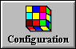
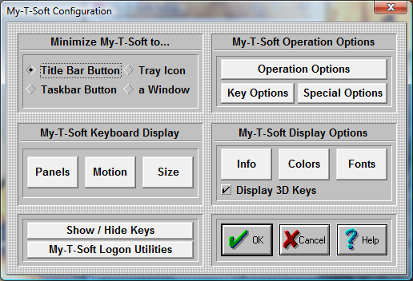

| My-T-Soft®: for Windows; Indestructible Keyboards and Indispensable Utilities; Version 1.80; User's Guide | ||
|---|---|---|
| Prev | Chapter 5. My-T-Soft Setup | Next |

Click on the Configuration Button.

Within Configuration, you will be able to set conditions that influence how My-T-Soft will appear and behave on screen.
Minimize My-T-Soft to...
You can select how My-T-Soft will act when it is minimized.
Title Bar Button - In order to minimize My-T-Soft to a Title Bar Button, do the following steps:
Click on the diamond-shaped Radio-Button with the title "Title Bar Button".
Press the OK Button.
My-T-Soft now will minimize to a button, which is always attached to the active application's title bar (top caption bar). To restore the window back to full size, click on the button once.
Note: There are numerous customer requested button size & positioning options - see detailed information in Initialization File Documentation.
TaskBar Button - In order to minimize My-T-Soft to a Taskbar Button, do the following steps:
Click on the diamond-shaped Radio-Button with the title "Taskbar Button".
Press the OK Button.
My-T-Soft now will minimize to a button on the Taskbar. To restore the window back to full size, click on the button on the Windows Taskbar, or right-click and select restore or maximize.
Tray Icon - In order to minimize My-T-Soft to an icon in the System Tray, do the following steps:
Click on the diamond-shaped Radio-Button with the title "Tray Icon".
Press the OK Button.
My-T-Soft now will minimize to an icon in the System Tray (in the area with the clock & volume control). To restore the window back to full size, click on the small icon in the task bar, or right-click and select restore.
Window - In order to minimize My-T-Soft to an floating Window, do the following steps:
Click on the diamond-shaped Radio-Button with the title "a Window".
Press the OK Button.
My-T-Soft now will minimize to a small floating window. To restore the window back to full size, click on the window. The minimized floating window can be resized and positioned as desired - when My-T-Soft is minimized, the last position and size of the minimized floating window will be used.
This will open an Operation Options dialog allowing you to set your preferences while using My-T-Soft. These include Reacting to Dialogs and other Windows, Typematic operation, Keystroke / Click option, Virtual Pointer, Action Button Move, Lower Case display, Track Pointing Device Input, and Key Border.
This opens the Key Options dialog where you can select Keys and Key combos (Ctrl, Shift, Alt) that may be Enabled or Disabled. Additionally, a Key or Key Combo can launch an executable. In conjunction with the My-T-Soft Developers Kit, this capability can be used to create new operational features, such as Minimize after the Enter key is pressed.
This opens the Special Options dialog box where Special handling features for Advanced users, developers, and integrators can be found. Includes the Supervisor/Operator mode options, and Custom Logo Feature, along with the ability to react to other windows in the system as they become active (Special Handling), including the ability to launch a separate executable.
The six buttons in the middle of the dialog box offer additional configuration options for My-T-Soft.
Panels Select the panels which My-T-Soft displays.
Motion Select the motion of your panels.
Size Select the size of My-T-Soft.
Info Select the information displayed in the Information panel.
Colors Select the colors for each panel.
Fonts Select different character display for My-T-Soft.
Display Options
Display 3D Keys - Check this option On to enable the display of the shaded, three-dimensional look keys. For resolutions of 256 colors or less, it is recommended that this option be set Off. My-T-Soft checks the current display capabilities when started, and may override this option. Note that the 3D keys are only displayed for sizes 8 or higher (the smaller sizes do not have enough displayed pixels to effectively render the 3-D look).
Show & Hide Keys
This opens My-T-Soft in a special mode that allows keys on the main keyboard panel to be hidden. This is useful for controlled applications where certain keys or key combinations need to be unavailable - for example, hiding the Alt key makes Alt-F4 impossible. To hide a key, click on the key - My-T-Soft will be repainted without the key just selected. To re-display a hidden key, click on the space where the key normally would appear, and the key will be shown again. To Save the current setting, click on OK . Select CANCEL to ignore any changes. Select Reset to Show All Keys on My-T-Soft.
My-T-Soft Logon Utilities
In order to logon onto Windows & obtain access to Network resources, the appropriate logon configuration is required within Windows. There are various options available in My-T-Soft to display & interact with the logon requirements. This opens the appropriate configuration options for the Windows platform running. See My-T-Soft Logon Utilities for more information.
Note: In general, when you make changes within My-T-Soft Setup, the changes are immediate and reflected by My-T-Soft. However, some display option combinations may require a restart of My-T-Soft for proper display. The logon options typically require a restart of Windows.